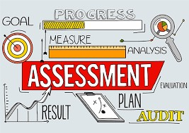

OBJECTIVE
|
|
|
By the end of this season,students should
be able to:
- Explain the importance of using performance
based assessment to evaluate learning outcomes.
- Recognize the significance of examining higher
level cognitive skills and promoting integrated
skills in the assessment process
- Demonstrate an understanding of the benefits of using
multiple assessment tools to gather comprehensive
information about student's progress
|
/
ASSESSMENT
|
|

|
In education, the terms assessment refers to the
wide variety of method or tools that educators
use to evaluate,measure,and document the academic
readiness,learning progress,skill acquisition, or
educational needs of students
|
|
CURRENT TRENDS IN ASSESSMENT
|
-
1
-
Using at least some performance
based assessment trends in assessment
-
2
-
Examining higher level cognitive skillsand emphasizing
integrated rather than isolated skills
-
3
-
Using multiple assessment
-
4
-
Having high performance standards including
world-class standards for interpreting
assessment results.
-
5
-
Involving students in all aspects of assessment
-
6
-
Making standards and criteria public rather
than private and secretive
-
7
-
using computers as parts of assessment
|
|
|